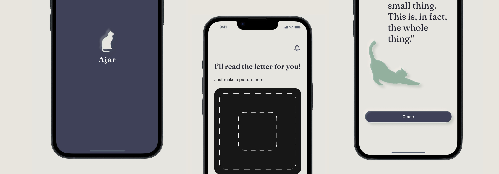
End-to-End Product Design · April 8 – July 28, 2026
A gentle companion app that helps adults with ADHD get bureaucratic tasks done before they turn into the “ADHD tax”.
93 % of the people with ADHD I surveyed know exactly what is pending — and still can’t manage to start the task. Many have structure at work through fixed appointments and other people, but fail privately, alone, at paperwork and recurring bureaucratic tasks.
One interview made the problem tangible: a person had left a letter unopened for weeks, out of fear of what might be inside — in the end the deadline was missed and the account was closed.
Those affected call this the “ADHD tax”. But it is not laziness — it is action paralysis caused by fear of the unknown, amplified by time blindness, where every task feels equally urgent. On top of that comes a well-documented medical link: people with ADHD often also have fundamental difficulties with reading.
know the task but can’t get started.
I didn’t open the letter — it took so long that the deadline was missed and my account was closed.”
Decision 1
Focus on adults with ADHD who function well at work thanks to external structure (deadlines, other people) but freeze at everyday tasks in private life without that structure. The pain point was greatest here, because shame and distress are high but barely visible.
Decision 2
First idea: an app for any recurring everyday tasks. Each day a task is drawn at random or chosen — letters were only one of several possible task types, about once a week. Core idea already here: externalizing the decision — the app decides what to do today, so the person doesn’t have to decide and prioritize on their own. The most important thing was to start the task at all — to take the first step. From the research I know: The first step is especially hard for people with ADHD — but once it is taken, the task is usually carried through.
Decision 3
The user test refuted the assumption that letters are “just one task among many”. The participants showed: Letters are not a side issue — they are the central hurdle, because they belong to the boring, bureaucratic tasks that are especially hard for people with ADHD. The dice / random-task mechanic was dropped completely and the MVP focused on letters. Scanning immediately became the heart of the app.
Decision 4
No streak system. Reasoning: Streaks lead to frustration when lost and feel like a punishment — for a neurodivergent target group that is often ashamed of failing anyway, the wrong signal. Instead: a humorous, slightly dry comment from the companion character Mia after every completed task — a dopamine kick without punishment logic.
Decision 5
From manual confirmation to an automatic entry in the external calendar, based on a one-time setting in onboarding. This lowers friction further, since no follow-up question is needed — a link also marks the task as done in the app at the same time.
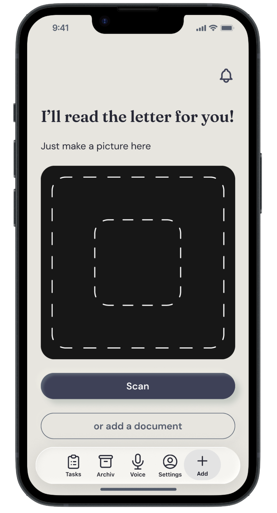
The user photographs the letter or adds a PDF / JPG file instead of having to read and understand it themselves. They only take the first step — the app handles everything else.
It is guaranteed that no further steps follow for today — the app will prioritize the tasks accordingly with the help of AI. This takes away the burden that people with ADHD otherwise feel even before the next task.
The app shows in simple words what needs to be done and by when. Key design decision: the person doesn’t have to classify and understand the letter — the app does that.
For cognitive relief the details are hidden at first — you only need to know what to do and by when. The time estimate for the task is also very meaningful for the target group: anyone who knows a task takes only 3 minutes feels less pressure, burden and fear. Still, all information is within reach — one click shows all details taken from the letter that are needed to complete the task. You really no longer have to read the letter itself.
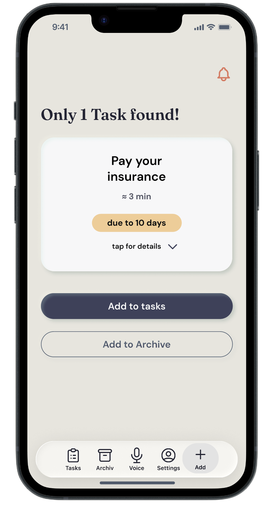
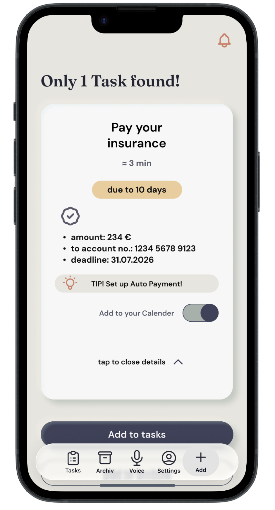
The task is automatically exported to the external calendar or a task management tool, including a link in the appointment. Via this link the user can complete the task directly in the external tool — and it is then automatically marked as done in Ajar too. Users don’t have to mark anything twice.
All documents, whether scanned or digital, are stored centrally and can be searched with the help of AI, even when your memory is vague. That way your documents are always within reach — nothing gets lost. Data protection is considered from the start: the app is designed for EU data protection law.
Tasks can be completed or postponed directly in the list with a swipe, without having to open the detail view — for smooth everyday use.
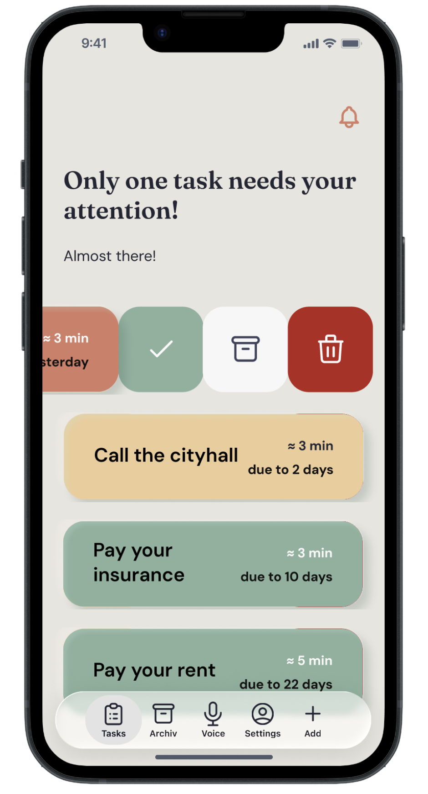
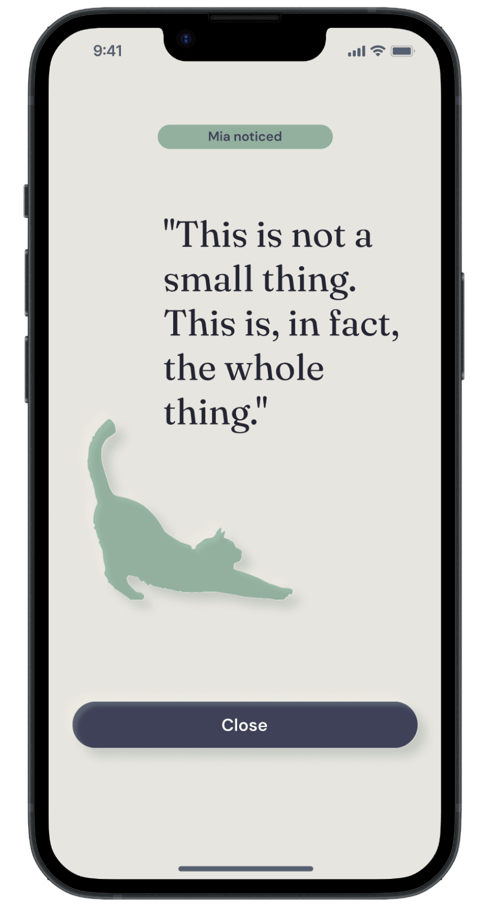
Comments on completed tasks in a humorous, dry way. Observes, doesn’t judge. She is always there.
No exaggerated confetti, no streak that punishes you when you fail.
Three test rounds in total:
Onboarding → choose an everyday task (the app helps decide) → use the letter function.
Opening letters was only planned as one task among many — the test showed it has to become the main function.
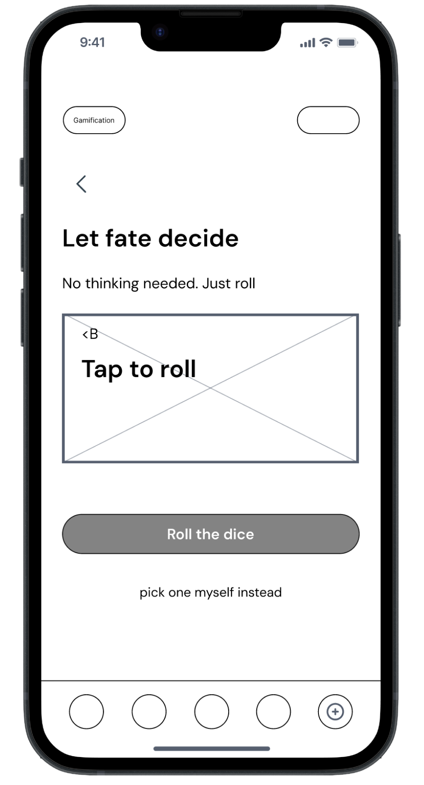
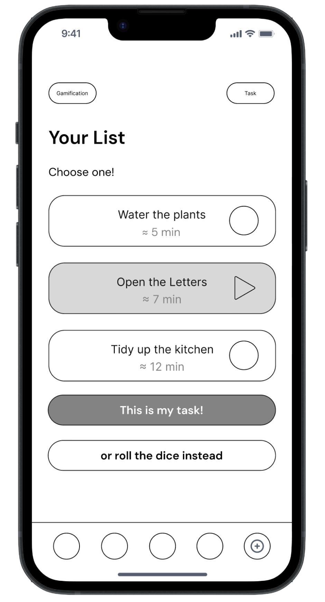
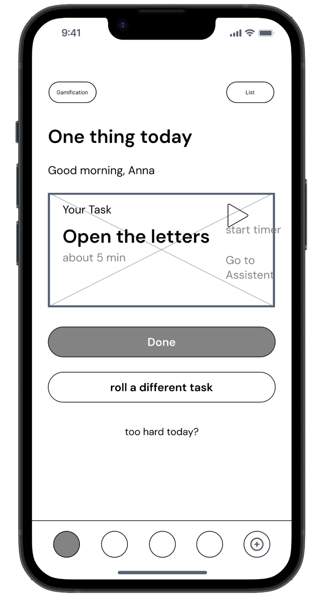
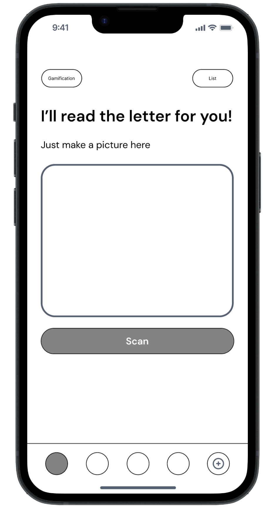
Onboarding flow tested.
Scan function flow tested.
Worked well — the scanning landed immediately.
Details tested included:
The “Show details” button was emphasized.
Why it mattersThe details of the task / document are also relevant for future AI training — how should the AI search letter contents and prioritize tasks — not only by deadline, but also by difficulty or number of steps needed (e.g. “call the authority” + “answer the letter” takes much longer than just paying an invoice).
test participants found the scan flow on the first try without any explanation.
I could really use this!”
I used ChatGPT and Claude to identify first topic clusters from my interview transcripts — that saved me preparation work in the analysis. I did the final interpretation and the persona building myself.
For the microcopy of my companion character Mia, I tested different tones with Claude before settling on a friendly-dry one. Mia accompanies the person through the process and notices their successes — the comment doesn’t feel like a reward, but like the benevolent noticing of a companion who sees what has been achieved without judging. That way she takes some of the pressure and the official seriousness out of bureaucratic tasks.
I also worked directly with Claude on preparing my interim presentation — for copy adjustments. The visual results slides were written in HTML by Claude according to the app’s design system and iterated together with me over several rounds.
· I’m glad I went into testing very early, in the wireframe phase — it helped me narrow the MVP focus in time, instead of realizing late that letters are the central hurdle and not just one task among many.
· Deliberately skipping streaks paid off: for a neurodivergent target group, positive, undramatic confirmation matters more than gamification that punishes setbacks.
· For time reasons I focused only on iOS users. Next, I would test with Android users whether the swipe function works smoothly and whether I should additionally offer a tap fallback for accessibility.
An email agent for automatic document recognition in the inbox and in other apps.
One more little extra — where does the name come from?
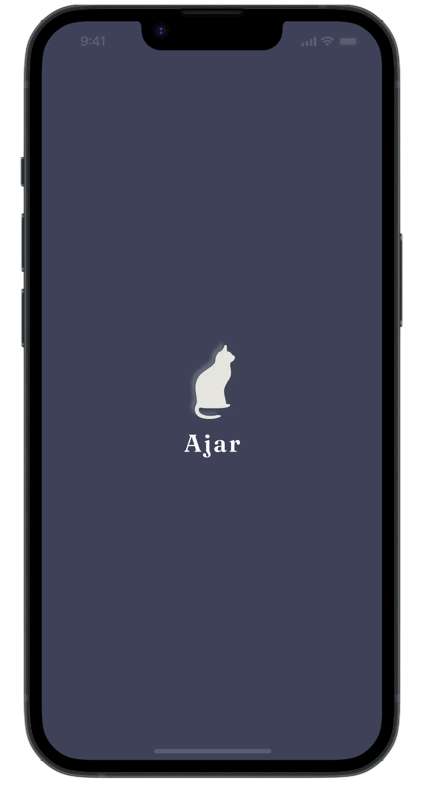
Ajar is English for a door that stands slightly open — not completely closed, but not wide open either.
That fits the core idea well: no pressure to get everything done at once (door wide open), but also no complete avoidance (door closed) — just a small first gap you can look through.
When the door stands slightly open, you can see what is waiting behind it — and that is exactly what takes away the power of the fear of the unknown, the central problem of my target group. It mirrors the “just take the first step” principle.